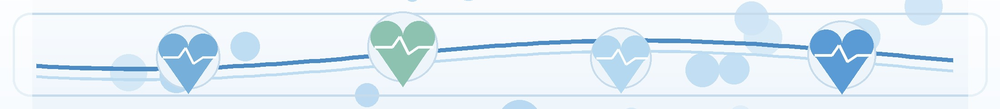
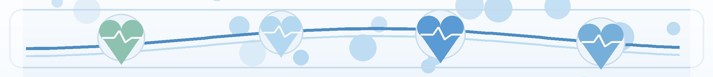
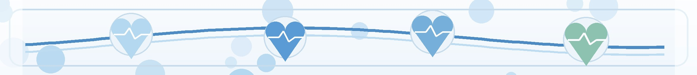
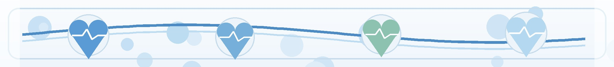

눈,
심혈관 건강을 보는 새로운 창
망막 검사로 고혈압·당뇨의 혈관 손상을 확인하고 심혈관 위험을 평가합니다
심혈관 질환은 전 세계 사망 원인 1위입니다
기존 평가 도구의 한계와 비침습적 새 대안의 필요성
오큘로믹스 (Oculomics) 란
눈으로 전신 건강을 들여다보는 새로운 의학 분야
눈은 미세혈관계와 신경계를 직접 관찰할 수 있는 유일한 기관입니다.
안과적 바이오마커를 활용해 질병의 기전을 이해하고 감지·예측하는 학문이 오큘로믹스입니다. 다른 장기에서는 불가능한 생체 내(in-vivo) 미세혈관 시각화가 가능하며, 망막은 뇌와 발생학적·해부학적·생리학적으로 연결되어 있어 전신 혈관 건강의 거울 역할을 합니다.
눈으로 보는 심혈관 건강 — 6가지 단서
안저 검사 (Fundoscopy) 에서 확인할 수 있는 미세혈관 변화

고혈압성 망막병증 (Hypertensive Retinopathy) 4단계
Keith-Wagener-Barker 분류 — 단계가 높을수록 심혈관 사건 위험이 급격히 증가

당뇨망막병증 (Diabetic Retinopathy) 단계
당뇨가 망막 미세혈관을 손상시키며 진행하는 단계 — 심혈관 위험의 강력한 동반 지표

Dr. Noon — 망막 사진에서 심혈관 위험 점수까지
간단한 안저 촬영 → AI 분석 → CAC 예측 → Reti-CVD 위험 등급 산출 (총 4단계)

CT 측정 CAC 점수와 통계적으로 동등한 성능
5년 추적 연구에서 망막 사진만으로 동등한 예측력 입증
망막 사진 한 장이 CT 검사와 동등한 5년 심혈관 사건 예측력을 보였습니다.
UK Biobank·SEED·한국 건강검진 코호트 등 다인종·다국가 검증을 거쳐 인종에 무관하게 일관된 성능을 입증했습니다. 다변량 Cox 모델에서는 Reti-CVD가 CAC·CIMT·baPWV 등 모든 바이오마커를 포함했을 때 유일하게 통계적으로 유의한 독립적 예측 인자였습니다 (HR 3.56, p=0.011).
Reti-CVD 위험 등급 — 저위험 vs 고위험 망막
정상에 가까운 망막과 위험 신호가 보이는 망막의 차이
- 망막 동맥의 뚜렷한 협착·구리선화
- 여러 곳의 동정맥 교차 변화 (AV nicking)
- 점상·화염상 망막 출혈 다수
- 면화반점 (cotton-wool spots) 산재
- 경성 삼출물 (hard exudates) 침착
- 신생혈관 또는 시신경유두 부종
- 균형 잡힌 동맥/정맥 직경비 (정상 2:3)
- 매끈한 동정맥 교차, 압박 소견 없음
- 출혈·삼출물·면화반점 없음
- 황반부 깨끗하고 부종 없음
- 시신경유두 경계 선명·정상 색상
- Reti-CVD 점수 낮음 — 일반 관리 유지
이런 분들은 망막 검사를 꼭 받으세요
고혈압·당뇨·중간위험군 — 망막 검사로 숨겨진 위험을 발견할 수 있습니다
오늘 꼭 기억할 핵심 8가지
눈은 심혈관 건강을 보는 창 — 정기 검사와 생활 관리로 위험을 줄입니다
눈으로 심혈관을 지키면
전신 건강이 함께 보입니다
정기 검사와 꾸준한 관리로 더 일찍 발견하고 더 현명하게 개입하겠습니다
광교중앙로 298, 4층
토요일 08:30~13:30
같은 자료를 다시 볼 수 있어요